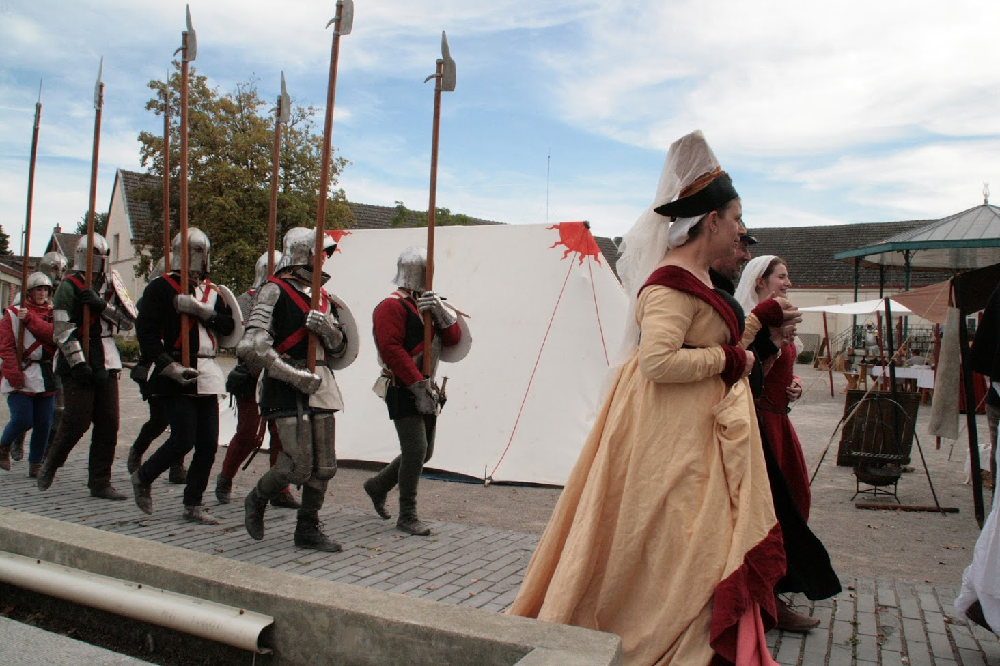
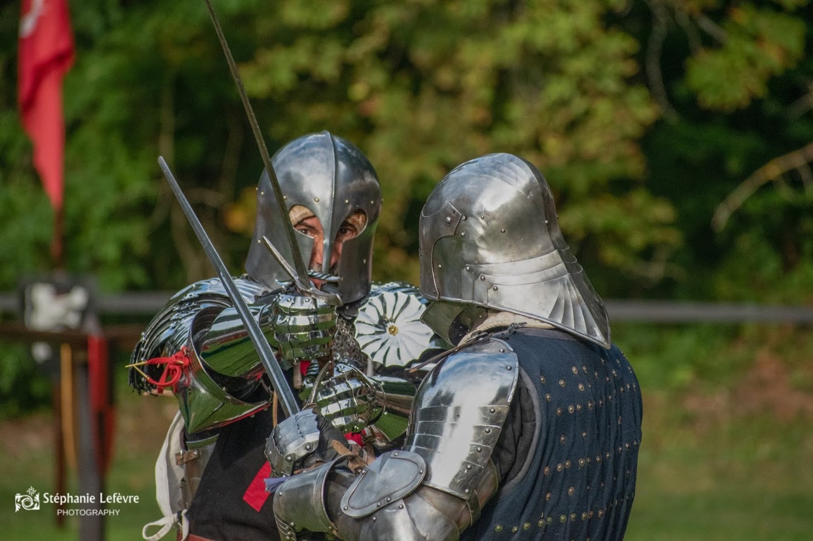

Vous organisez un évènement médiéval ? Les Lions de Flandre disposent d'un bel éventail de compétences pour animer votre évènement avec un soin particulier pour la fidélité historique !
D'une capacité d'une dizaine de tentes et auvents, notre troupe saura plonger les visiteurs dans l'ambiance fidèle d'un campement militaire du XVème siècle grâce à sa tente seigneuriale, sa chappelle, sa forge et son chirugien-barbier qui viennent compléter les toiles de la troupe, l'intendance et divers éléments de décorum.
Pour l'animation militaire, notre troupe est entrainée au maniement des hast. Nous sommes ainsi à-même de participer à un défilé / presentation de troupe, de présenter une escorte , ou de faire une explication illustrée d'une unité en action (participation du public possible).
Vous souhaitez présenter une bataille rangée ? Nos membres suivent une entraînement régulier aux armes et sont tout à fait aptes à participer à une bataille reconstituée en vous apportant une troupe constituée d'hommes d'armes, d'archers et/ou d'artilleurs.
Votre évènement ne présentera pas de combats de cette envergure mais vous souhaitez une démonstration de combat ? Grâce aux liens forts de notre association avec le domaine des AMHE (art martial historique médiéval), nos membres sont entraînées aux techniques martiales du moyen-âge et peuvent faire démonstration d'un duel courtois ou d'un tournoi à pied durant lequel notre seigneur éprouvera le talent et la bravoure de ses hommes.
